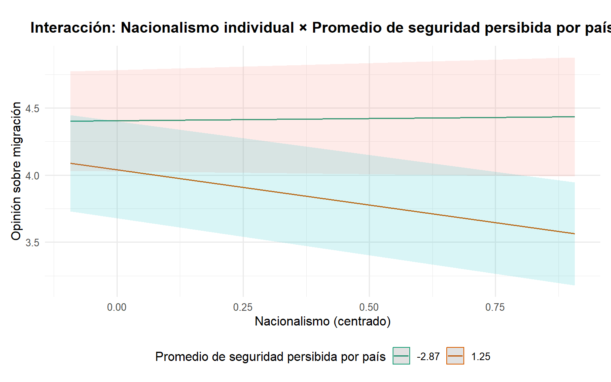

Estudio sobre las percepciones hacia la migración desde un análisis multinivel: análisis según país
Análisis de Datos Multinivel
Introducción
La migración es hoy en día como uno de los fenómenos más contingentes a nivel mundial, de acuerdo con la ONU (2025) el número de migrantes a nivel internacional corresponde a 304 millones de personas aproximadamente, un número que se ha duplicado desde 1990. Estos procesos migratorios pueden explicarse por diversos factores, como lo pueden ser los económicos, sociales, políticos, demográficos y ecológicos (Armijos-Orellana et al, 2022), por lo que debe comprenderse como un fenómeno multicausal en el que influyen cuestiones no solo individuales, sino también contextuales, como lo pueden ser una crisis económica a nivel nacional, crisis políticas, conflictos bélicos, desplazamiento por riesgos socionaturales, etc.
Ante el aumento de los flujos migratorios, han aparecido también discursos que presentan una mala percepción hacia las personas migrantes, cayendo directamente en posiciones anti migrantes y discriminatorias que se pueden ver reflejadas en fenómenos políticos de nivel global como lo es el auge de la extrema derecha. Diversos estudios han dado cuenta de que existe una relación entre las posiciones de derecha más extremas y una mala percepción hacia la migración (Servicio Jesuita a Migrantes, 2020; Akkerman, 2018) en conjunto a una tendencia hacia posiciones más nacionalistas o bajo discursos, denominados por las mismas personas, “patriotas” que suelen ir de la mano con una negatividad hacia la migración (Akkerman, 2018; Buraschi y Aguilar-Idañez, 2023), estas posiciones, también suelen manifestarse más en hombres (SJM, 2020). La percepción hacia la migración también se puede ver influida por cuestiones como un régimen más democrático o liberal respecto a políticas de migración (Romero, 2021), donde en aquellos países con una política más democrática presentan una mejor percepción de las personas migrantes.
Por otro lado, factores individuales como lo pueden ser el nivel educativo o el nivel socioeconómico pueden influir en una percepción negativa hacia la migración, producto de que existiría una posible competencia entre las personas migrantes y las personas de menor nivel educacional o bajos ingresos por aquellas ocupaciones de menor complejización (Romero, 2021; Emmenegger y Klemmensen, 2013). Los países que suelen tener un mayor nivel de desarrollo en diversos indicadores como el índice de desarrollo humano, o mayores niveles de educación, suelen recibir mayor migración. como lo muestran los informes OCDE (2024) que dan cuenta de cómo existe un aumento de la migración hacia gran parte de los países pertenecientes a este, por lo que la percepción hacia la migración puede verse afectada por el desarrollo de un país al existir una mayor migración ante un mayor nivel de desarrollo.
Como se muestra con lo comentado anteriormente, vemos como el fenómeno migratorio y las percepciones hacia este constituyen una cuestión fundamental a nivel global, en tanto la migración, así como la oposición a esta van en aumento durante los últimos años por lo que el estudio de la percepción hacia la migración se vuelve contingente. Para estudiar esto se debe analizar cuestiones contextuales y factores individuales que darían cuenta de una mayor apreciación u oposición hacia la migración, y al transformarse en un fenómeno global, se vuelve interesante el análisis desde una perspectiva multinivel que considere factores contextuales de cada país que permita conocer cómo varían las percepciones sobre migración no solo considerando cuestiones individuales.
Objetivos
Objetivos
En este estudio se pretende abordar las opiniones negativas hacia la migración en distintos países a través de un enfoque multinivel, en el cual se consideran tanto factores individuales como contextuales, para determinar si existen patrones contextuales que puedan dar una explicación a posibles diferencias sistemáticas entre países.
Objetivo general: Identificar en qué medida las opiniones negativas hacia la migración se ven influidas por el país de residencia.
Hipótesis:
Nivel 1 (individual):
Personas que se identifican con posiciones políticas inclinadas a la derecha tenderán hacia opiniones negativas respecto a la migración.
Personas con mayores niveles de ingresos tenderán hacia una opinión positiva hacia la migración.
Las mujeres tienen opiniones positivas hacia la migración en comparativa a los hombres.
Personas con tendencias más nacionalistas tenderán hacia una opinión negativa hacia la migración.
Nivel 2: (país):
Países con un mayor promedio de felicidad, presentan opiniones positivas hacia la migración.
Países con mayores promedios de años de escolaridad, presentan opiniones positivas hacia la migración.
Países con una mayor percepción de inseguridad, presentan una opinión negativa hacia la migración.
Interacción entre niveles:
- El promedio de felicidad de un país atenúa el efecto del nacionalismo en la opinión frente a los migrantes.
Datos, variables y método
Datos
La base utilizada es la séptima ola del World Values Survey (WVS), con datos recolectados entre 2017 y 2022. Con esto, es posible construir una estructura de datos de dos niveles: nivel 1 (personas) y nivel 2 (países), anidados en la variable país. Para preparar los datos, se aplicó un proceso de limpieza que incluyó la recodificación y eliminación de valores perdidos por listwise, resultando en una base final de 53.696 casos en 47 países.
Variable dependiente.
Respecto a la variable dependiente se elaboró una escala sumativa de opiniones hacia la migración (op_mig) a partir de 5 ítems, codificados en una escala de 0 a 10, donde el valor más alto (10) indica una opinión positiva hacia la migración y el valor más bajo (0) indica una opinión negativa frente a la migración. Los ítems considerados fueron de las variables Q124, Q126, Q128 y Q129, que expresan opiniones respecto a la migración bajo la consigna “Desde su punto de vista, ¿cuáles han sido los efectos de los inmigrantes en el desarrollo de este país?”, los efectos que se consultaban eran “aumentan la criminalidad” (Q124), “aumentan el riesgo de terrorismo” (Q126), “aumentan el desempleo” (Q128) y por último “llevan al conflicto social” (Q129). Estos ítems tenían tres posibilidades de respuesta: De acuerdo (2); Difícil de decir (1); En desacuerdo (0). Se invirtieron los valores de 2 y 0, para poder tener resultados de a mayor puntaje en la escala, mejor opinión hacia migrantes. Finalmente, se incluyó el ítem Q121 (Ahora nos gustaría saber su opinión sobre las personas de otros países que vienen a vivir a este país: los inmigrantes. ¿Cómo evaluaría el impacto de estas personas en el desarrollo del país?), pregunta que utiliza una escala Likert que va de Muy bueno (5) a Muy malo (1). Para mantener la coherencia con la dirección de la escala general, se recodificaron las categorías 1 y 2 como 0, la categoría 3 como 1, y las categorías 4 y 5 como 2. Esta escala presenta un alfa cronbach de 0.77 dando cuenta de una consistencia interna suficiente para el análisis estadístico, con una mediana de 4, y un promedio de 4,25 (sd=3.03), indicando una leve tendencia hacia opiniones positivas.
| Statistic | N | Min | Pctl(25) | Median | Mean | Pctl(75) | Max | St. Dev. |
| op_mig | 53,696 | 0 | 2 | 4 | 4.25 | 7 | 10 | 3.03 |
| female | 53,696 | 0 | 0 | 1 | 0.51 | 1 | 1 | 0.50 |
| nacionalismo | 53,696 | 1 | 3 | 4 | 3.44 | 4 | 4 | 0.76 |
| pos_pol | 53,696 | 1 | 5 | 5 | 5.79 | 8 | 10 | 2.46 |
| personal_income | 53,696 | 1 | 4 | 5 | 5.03 | 6 | 10 | 2.09 |
Variables independientes de nivel 1
Las variables independientes a nivel individual son: nacionalismo (Q254), cuyas opciones de respuesta van desde Muy orgullosa/o (1) a Para nada orgullosa/o (4). Luego se encuentra la variable ingreso relativo del hogar (personal income, Q288) que consta de una escala de 1 (ingreso más bajo) a 10 (ingreso más alto). Tambien se incluyó la variable female (Q260), y recodificada: 0 = Masculino y 1 = Femenino. Por último, se utilizó la variable autoubicación ideológica en el eje izquierda-derecha (pos_pol), que se encuentra en la pregunta Q240, que consiste en una escala del 1 (izquierda) al 10 (derecha). Los principales estadísticos descriptivos pueden ser encontrados en la Tabla 1, destacamos los resultados de pos_pol, donde se tiende al centro con una mediana 5 y promedio de 5.79 (sd=2.46), también vemos que nacionalismo tiende a que la mayoría presenta un mayor orgullo con promedio 3.44 y mediana 4.
| Statistic | N | Min | Pctl(25) | Median | Mean | Pctl(75) | Max | St. Dev. |
| pais | 47 | 20 | 210.5 | 458 | 436.49 | 642.5 | 862 | 260.99 |
| happines_promedio_pais | 47 | 2.55 | 2.99 | 3.14 | 3.14 | 3.29 | 3.57 | 0.21 |
| seguridad_prom | 47 | 3.01 | 3.04 | 3.07 | 3.08 | 3.11 | 3.30 | 0.06 |
| meanschooling | 47 | 2.80 | 7.70 | 10.20 | 9.60 | 11.90 | 14.10 | 2.52 |
Variables independientes de nivel 2
Las variables independientes de nivel 2 son: el promedio de felicidad por país (Q46, “qué tan feliz te sientes en general”) con valores del 1 al 4, la cual se invirtió para que a mayor puntaje mayor felicidad promedio, la variable de años promedio de escolaridad (meanschooling) proveniente de datos de la UNESCO de 2018, y el promedio de sensación de seguridad por país (Q131, qué tan seguro te sientes en tu barrio) con valores del 1 al 4, invertidos para que a mayor seguridad un mayor número promedio. Los principales estadísticos descriptivos pueden ser encontrados en la Tabla 2, destacando que existe una alta sensación de seguridad con valores sobre 3 en promedio, mediana y en sus rangos, así como una alta sensación de felicidad promedio, nuevamente con valores rondando el 3 en todos sus descriptivos.
Métodos
Los métodos utilizados fueron la estimación de distintos modelos bajo una lógica de carácter multinivel, obteniendo un total de 6 modelos utilizando el programa Rstudio y la librería lmer. Se estimaron un modelo nulo para ver la variabilidad según país que se comentará más adelante, modelos con variables de nivel 1, nivel 2, nivel 1 + nivel 2, uno con pendiente aleatoria en nacionalismo, y uno para ver la interacción entre nacionalismo y felicidad promedio por país. Las fórmulas de los modelos fueron las siguientes:
Modelo nulo
\[ \text{op\_mig}_{ij} = \gamma_{00} + u_{0j} + r_{ij} \]
Modelo variables nivel 1
\[ \text{op\_mig}_{ij} = \gamma_{00} + \gamma_{01} \text{female} + \gamma_{02} \text{pos\_pol} + \gamma_{03} \text{nacionalismo} + \gamma_{04} \text{personal\_income} + u_{0j} + r_{ij} \]
Modelo variables nivel 2
\[ \text{op\_mig}_{ij} = \gamma_{00} + \gamma_{01} \text{meanschooling} + \gamma_{02} \text{happiness\_promedio\_pais} + \gamma_{03} \text{seguridad\_promedio\_pais} + u_{0j} + r_{ij} \]
Modelo con variables nivel 1 y 2
\[ \begin{aligned} \text{op\_mig}_{ij} &= \gamma_{00} + \gamma_{01} \text{meanschooling} + \gamma_{02} \text{happiness\_promedio\_pais} + \gamma_{03} \text{seguridad\_promedio\_pais} \\ &+ \gamma_{04} \text{female} + \gamma_{05} \text{pos\_pol} + \gamma_{06} \text{nacionalismo} + \gamma_{07} \text{personal\_income} + u_{0j} + r_{ij} \end{aligned} \]
Modelo con pendiente aleatoria en nacionalismo
\[ \begin{aligned} \text{op\_mig}_{ij} &= \gamma_{00} + \gamma_{01} \text{meanschooling} + \gamma_{02} \text{happiness\_promedio\_pais} + \gamma_{03} \text{seguridad\_promedio\_pais} \\ &+ \gamma_{04} \text{female} + \gamma_{05} \text{pos\_pol} + \gamma_{06} \text{nacionalismo} + \gamma_{07} \text{personal\_income} \\ &+ u_{0j} + u_{1j} \text{nacionalismo} + r_{ij} \end{aligned} \]
Modelo con interacción entre niveles
\[ \begin{aligned} \text{op\_mig}_{ij} &= \gamma_{00} + \gamma_{01} \text{meanschooling} + \gamma_{02} \text{happiness\_promedio\_pais} + \gamma_{03} \text{seguridad\_promedio\_pais} \\ &+ \gamma_{04} \text{female} + \gamma_{05} \text{pos\_pol} + \gamma_{06} \text{nacionalismo} + \gamma_{07} \text{personal\_income} \\ &+ \gamma_{08} \text{happiness\_promedio\_pais} \times \text{nacionalismo} + u_{0j} + u_{1j} \text{nacionalismo} + r_{ij} \end{aligned} \]
Análisis
Bivariados

En la Figura 1 se muestra el diagrama de dispersión con la variable años promedio de escolaridad por país y opinión promedio sobre migración. En primer lugar cabe rescatar que hay una leve relación positiva entre la escolaridad promedio y las opiniones hacia la migración, señalando que un mayor nivel de escolaridad está asociado a un menor rechazo hacia la migración. Sin embargo, la pendiente es muy tenue, con los países bastante dispersos en el plano, lo que indica una débil relación con poca consistencia. Países como Nueva Zelanda y Canadá presentan altos niveles de escolaridad con una mayor aceptación de la migración, pero también países como Alemania o Eslovaquia, que tienen niveles similares de escolaridad promedio, presentan más opiniones vinculadas al rechazo hacia la migración.

La Figura 2 muestra la relación entre la variable de nivel promedio de felicidad del país con la variable de opinión promedio sobre migración. Se puede observar una relación positiva entre estas variables, indicando que países con un mayor promedio de felicidad están asociados a una mayor apertura hacia la migración. El diagrama muestra una pendiente más pronunciada que la del gráfico anterior y una menor dispersión de los datos, lo que señala una mayor consistencia en esta relación.

En la Figura 3 se muestra la relación entre la variable de promedio de sensación de seguridad y la variable opinión promedio sobre migración en un diagrama de dispersión. Se puede notar una leve relación inversa entre estas variables representada por la pendiente con una sutil inclinación. Esto quiere decir que una mayor sensación de seguridad está asociada a un mayor rechazo hacia la migración, sin embargo no constituye una relación robusta dada la característica de la pendiente.
Multivariados
| Nulo | Nivel 1 | Nivel 2 | Nivel 1 y 2 | Pendiente aleatoria nacionalismo | Interacción entre niveles Felicidad | Interacción entre niveles Seguridad | |||||||||||||||
|---|---|---|---|---|---|---|---|---|---|---|---|---|---|---|---|---|---|---|---|---|---|
| Predictors | Estimates | std. Error | p | Estimates | std. Error | p | Estimates | std. Error | p | Estimates | std. Error | p | Estimates | std. Error | p | Estimates | std. Error | p | Estimates | std. Error | p |
| (Intercept) | 4.13 | 0.19 | <0.001 | 4.14 | 0.19 | <0.001 | 4.15 | 0.18 | <0.001 | 4.16 | 0.18 | <0.001 | 4.16 | 0.18 | <0.001 | 4.16 | 0.18 | <0.001 | 4.16 | 0.18 | <0.001 |
| female | -0.01 | 0.02 | 0.672 | -0.02 | 0.02 | 0.384 | -0.03 | 0.02 | 0.210 | -0.02 | 0.02 | 0.382 | -0.02 | 0.02 | 0.378 | ||||||
| pos pol cmc | -0.08 | 0.00 | <0.001 | -0.08 | 0.00 | <0.001 | -0.08 | 0.00 | <0.001 | -0.08 | 0.00 | <0.001 | -0.08 | 0.00 | <0.001 | ||||||
| nacionalismo cmc | -0.09 | 0.02 | <0.001 | -0.09 | 0.02 | <0.001 | -0.12 | 0.05 | 0.027 | -0.10 | 0.02 | <0.001 | -0.09 | 0.02 | <0.001 | ||||||
| personal income cmc | 0.07 | 0.01 | <0.001 | 0.07 | 0.01 | <0.001 | 0.07 | 0.01 | <0.001 | 0.07 | 0.01 | <0.001 | 0.07 | 0.01 | <0.001 | ||||||
| happiness gmc | 1.74 | 0.88 | 0.047 | 1.74 | 0.88 | 0.047 | 1.72 | 0.81 | 0.034 | 1.74 | 0.88 | 0.047 | 1.74 | 0.88 | 0.047 | ||||||
| seguridad gmc | -0.35 | 0.04 | <0.001 | -0.34 | 0.04 | <0.001 | -0.34 | 0.04 | <0.001 | -0.34 | 0.04 | <0.001 | -0.36 | 0.04 | <0.001 | ||||||
| meanschooling gmc | 0.09 | 0.07 | 0.228 | 0.09 | 0.07 | 0.227 | 0.05 | 0.07 | 0.445 | 0.09 | 0.07 | 0.227 | 0.09 | 0.07 | 0.227 | ||||||
| happiness gmc × nacionalismo cmc |
-0.23 | 0.08 | 0.004 | ||||||||||||||||||
| seguridad gmc × nacionalismo cmc |
-0.14 | 0.05 | 0.007 | ||||||||||||||||||
| Random Effects | |||||||||||||||||||||
| σ2 | 7.49 | 7.43 | 7.48 | 7.42 | 7.34 | 7.42 | 7.42 | ||||||||||||||
| τ00 | 1.61 pais | 1.61 pais | 1.52 pais | 1.52 pais | 1.52 pais | 1.52 pais | 1.52 pais | ||||||||||||||
| τ11 | 0.12 pais.nacionalismo_cmc | ||||||||||||||||||||
| ρ01 | 0.41 pais | ||||||||||||||||||||
| ICC | 0.18 | 0.18 | 0.17 | 0.17 | 0.18 | 0.17 | 0.17 | ||||||||||||||
| N | 47 pais | 47 pais | 47 pais | 47 pais | 47 pais | 47 pais | 47 pais | ||||||||||||||
| Observations | 53696 | 53696 | 53696 | 53696 | 53696 | 53696 | 53696 | ||||||||||||||
| Marginal R2 / Conditional R2 | 0.000 / 0.177 | 0.007 / 0.184 | 0.017 / 0.183 | 0.023 / 0.190 | 0.021 / 0.195 | 0.024 / 0.190 | 0.024 / 0.190 | ||||||||||||||
En la Tabla 3 se presenta una comparación entre los modelos estimados. En primer lugar está el modelo sin predictores. En segundo lugar está el modelo con variables de nivel 1: sexo (female), autoubicación ideológica (pos_pol_cmc), orgullo nacional (nacionalismo_cmc) e ingreso relativo del hogar (personal_income_cmc). Todas estas variables están centradas a la media del grupo. En tercer lugar se encuentra el modelo con las variables de nivel 2: nivel promedio de felicidad (happiness_gmc), promedio de sensación de seguridad (seguridad_gmc) y años promedio de escolaridad (meanschooling_gmc). Estas variables están centradas a la gran media. En cuarto lugar está el modelo con las variables de nivel 1 y nivel 2. En quinto lugar se encuentra el modelo con variables de nivel 1 y 2 con orgullo nacional como pendiente aleatoria. Finalmente, en sexto lugar está el modelo con la interacción entre los niveles.
Modelo nulo
Respecto al modelo nulo, el intercepto muestra un valor promedio de 4.13 de la variable independiente, es decir, el promedio de la opinión sobre la migración, en una escala de 1 a 10, se encuentra relativamente al centro con más cercanía hacia el rechazo sobre la migración cuando no se considera ningún predictor. Además el coeficiente de correlación intraclase es de 0.18, lo que indica que un 18% de la varianza se explica por diferencias entre países, lo cual justifica el uso de modelos multinivel.
Modelo con variables de nivel 1
| npar | AIC | BIC | logLik | deviance | Chisq | Df | Pr(>Chisq) | |
|---|---|---|---|---|---|---|---|---|
| Modelo 4: Pendiente aleatoria | 11 | 260253.8 | 260351.6 | -130115.9 | 260231.8 | NA | NA | NA |
| Modelo 5: Interacción entre niveles | 12 | 259806.3 | 259912.9 | -129891.1 | 259782.3 | 449.576 | 1 | 0 |
Viendo la Tabla de Tabla 4
Como se muestra en la Figura Figura 4
Conclusiones preliminares
De momento, con los modelos preliminares, se puede plantear que, en las hipótesis de primer nivel, la primera de nuestras hipótesis se estaría cumpliendo, ya que aquellas personas con tendencias políticas hacia la derecha presentan una percepción negativa hacia las personas migrantes. Respecto a la segunda hipótesis, también se cumple, puesto que, a menor nivel de ingreso, mayor percepción negativa hacia los migrantes, siendo significativa en todos los modelos excepto el agregado. La tercera hipótesis, se cumple parcialmente al existir diferencias, pero no tan importantes, y existir un p > 0.001, teniendo significancia solo al 95%. Respecto a la cuarta hipótesis, vemos que existe una variabilidad entre países respecto a la influencia del nacionalismo en la percepción de migrantes producto de lo visto en la pendiente aleatoria de esta variable.
Respecto a las hipótesis de segundo nivel, podemos concluir que no se cumplirían ya que ninguna de estas variables presenta niveles de significancia estadística p < 0.001, pero, no se puede dejar de lado que variables como HDI, a mayor nivel de desarrollo humano, presentan un aumento importante de la percepción negativa respecto a los migrantes, esto puede relacionarse con la bibliografía citada ya que los países OCDE, por ejemplo, son aquellos que mayor nivel de migrantes han recibido durante los últimos años (2024).
Biliografía
Akkerman, T. (2024). Inmigración y redistribución en Europa: ¿a favor o en contra del Estado del bienestar? Revista CIDOB d’Afers Internacionals, (137), 47–62.https://www.cidob.org/sites/default/files/2024-09/47-62_TJITSKE%20AKKERMAN.pdf
Armijos-Orellana, Ana Carolina, Maldonado-Matute, Juan Manuel, González-Calle, María José, & Guerrero-Maxi, Pedro Fernando. (2022). Los motivos de la migración. Una breve revisión bibliográfica. Universitas-XXI, Revista de Ciencias Sociales y Humanas, (37), 223-246. https://doi.org/10.17163/uni.n37.2022.09
Buraschi, D., & Aguilar-Idañez, M. J. (2023). La amenaza percibida y la redistribución: actitudes de los españoles hacia el gasto público destinado a los inmigrantes. Migraciones. Publicación del Instituto Universitario de Estudios sobre Migraciones, (60), 77–105.https://revistas.comillas.edu/index.php/revistamigraciones/article/view/18461/17228
Emmenegger, P., & Klemmensen, R. (2013). Immigration and redistribution revisited: How different motivations can offset each other. Journal of European Social Policy, 23(4), 406–422. https://doi.org/10.1177/0958928713492773
OCDE (2024). International Migration Outlook 2024. OCDE Publishing. https://doi.org/10.1787/50b0353e-en.
Organización de las Naciones Unidas. (s.f.). Migración.https://www.un.org/es/global-issues/migration
Romero Montero, A. (2021). Actitudes hacia la inmigración y preferencias redistributivas en España. Universitat Autònoma de Barcelona.https://ddd.uab.cat/pub/tfg/2021/tfg_375812/TFG_aromeromontero2.pdf
Servicio Jesuita a Migrantes (SJM Chile). (2020). Barómetro de percepción de la migración 2018-2020. Actividad en redes sociales y su contexto. https://sjmchile.org/wp-content/uploads/2024/01/barometrofinal.pdf